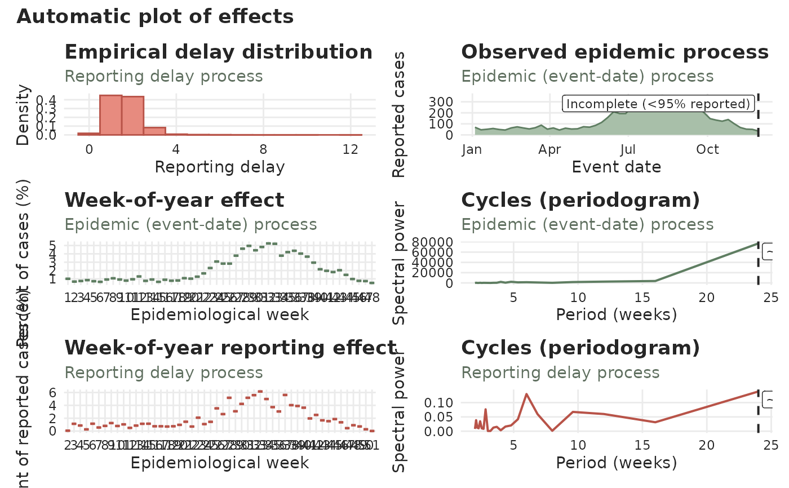
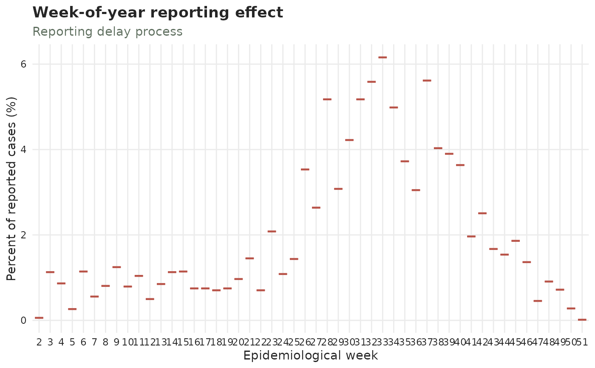
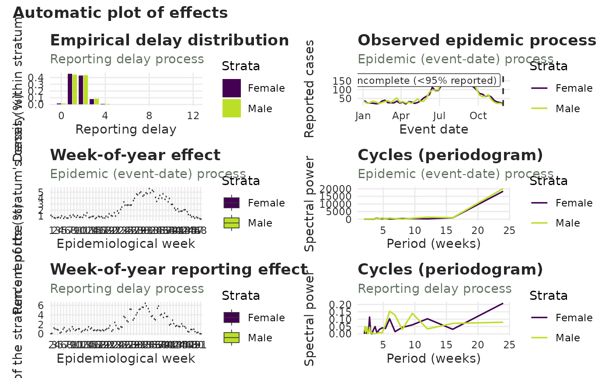
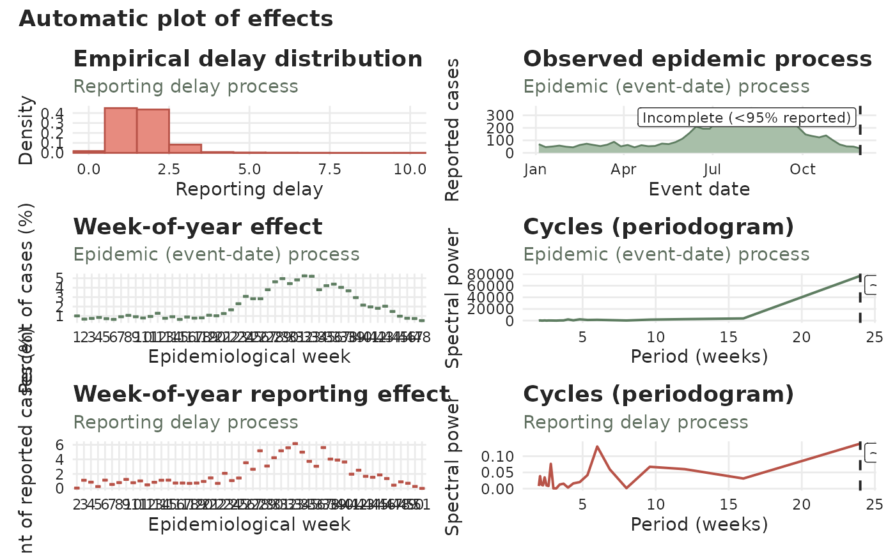

Diagnostic autoplot for a tbl_now
autoplot.tbl_now.Rd![[Experimental]](figures/lifecycle-experimental.svg)
Produces a multi-panel diagnostic overview of a tbl_now using
ggplot2::ggplot() and patchwork. Two families of panels are available
— one describing the case counts and one describing the reporting
delay — and you choose which to draw with the panels argument.
Case-count panels
"delay_distribution"— a (case-count weighted) histogram of the reporting delay (.delay). Forcount-cumulativedata this panel instead shows the cumulative growth by delay: boxplots (on a log scale, with a dashed reference at1) of the ratio of each event date's cumulative count at a delay to its cumulative count at the previous delay. A ratio above1is an upward revision, below1a downward one, and the boxes converge to1as reporting completes."epidemic"— the latest reported case counts perevent_date, with a dashed vertical line marking where the data become incomplete (less thanlevelof the delay distribution has arrived). Holidays from the attachedtemporal_effects()spec are marked with dots."calendar_weekday","calendar_week","calendar_month"— boxplots of the normalized case effect (each event date's cases divided by the overall mean, so 1 is average) by day of week, epidemiological week, or month."calendar_holiday"— the same normalized boxplots by day type. The categories follow the attachedtemporal_effects()spec: a holiday calendar and aweekendeffect together giveWeekday/Weekend/Holiday, a calendar alone givesNon-holiday/Holiday, and aweekendeffect alone givesWeekday/Weekend. A holiday falling on a weekend counts as a holiday."calendar_holiday_lag"— the same normalized boxplots by position relative to the nearest holiday, as asked for byholiday_lags(seetemporal_effects()):"2 before","1 before","Holiday","1 after", ..., plus"Other"for every other day as the reference. It shows exactly the days the..._holiday_lag_k/..._holiday_lead_kcolumns flag — weekends and other holidays are skipped when counting working days — so you can see whether the lags you asked for are the ones that matter."seasonality"— a cycles periodogram of the incidence series whose dominant peak suggests a Fourier season length fortemporal_effects().
Reporting-delay panels (to inspect delay effects)
"delay_weekday","delay_week","delay_month"— boxplots of the normalized mean reporting delay (each event date's mean delay divided by the overall mean delay, so 1 is average) by day of week, epidemiological week, or month; these reveal whether the delay itself has a calendar pattern. Normalizing keeps them on the same scale as the case-count calendar panels and makes them comparable across strata."delay_holiday","delay_holiday_lag"— the reporting-delay twins of the two holiday panels above: the normalized mean delay by day type and by position relative to the nearest holiday. These are often the more telling pair — a holiday usually does not change how many cases occur, but it very much changes how long they take to be reported."delay_seasonality"— a cycles periodogram of the mean-delay series, whose peak marks a cycle in the reporting delay (e.g. a weekly reporting rhythm).
Every panel is colour-coded by the process it describes — red for the reporting-delay panels, green for the case-count (epidemic) ones — and says which one it is in its subtitle, so a single panel still reads on its own.
Which panels are available depends on the object. The calendar/delay
panels follow the event unit: daily data offers day-of-week and
week-of-year panels, weekly data week-of-year, monthly data month-of-year. The
four holiday panels describe the attached temporal_effects() spec, so
they appear only when there is one to describe: "calendar_holiday" /
"delay_holiday" need a holidays calendar or a weekend effect, and the
two lag panels additionally need a non-zero holiday_lags. Requesting a
holiday panel without the matching effect warns and skips it. The spec is read
directly, so you do not need to call compute_temporal_effects() first.
The delay panels are computed on the complete portion of the series (event dates on or before the incompleteness line) so the recent reporting truncation does not bias them.
Usage
# S3 method for class 'tbl_now'
autoplot(
object,
...,
panels = "all",
by_strata = FALSE,
strata = NULL,
measure = c("percent", "normalized"),
level = 0.95,
plotly = FALSE,
palette = .tbl_now_palette(),
delay_distribution_xlim = NULL,
event_date_xlim = NULL,
calendar_effect_xlim = NULL,
seasonality_xlim = NULL
)Arguments
- object
A
tbl_nowobject.- ...
Unused; present for compatibility with
ggplot2::autoplot().- panels
Which panels to draw. Either a vector of the concrete keys listed above, or one of the aliases
"all"(default; every applicable panel),"calendar"(the case-count calendar panels) or"delay_calendar"(the reporting-delay calendar panels). Selecting a single panel returns that panel as a plain ggplot2 object instead of a patchwork.- by_strata
Logical (default
FALSE). WhenTRUE, every panel is split by stratum: the calendar / delay boxplots become dodged boxes (one per stratum, side by side), the epidemic process and both periodograms become one coloured line per stratum (no area fill), and the delay distribution becomes dodged bars (one per stratum). The boxplots are then normalized per stratum (1 = that stratum's own average) so the calendar pattern is comparable across strata. Colours use a viridis scale. In this mode the holiday dots are omitted from the epidemic panel.- strata
Character vector of column names to group by when
by_strata = TRUE.NULL(default) uses the object'sstrata(seeget_strata()); pass a subset (e.g.strata = "gender") to group by only some of them. Ignored whenby_strata = FALSE.- measure
How to express the calendar-effect boxplots (the day-of-week, week-of-year, month-of-year, holiday and holiday-lag panels; every other panel ignores it).
"normalized"— the value divided by its overall mean, so1(the dashed line) marks an average level. Case-count panels normalize the cases per event date; delay panels normalize the mean reporting delay."percent"(default) — the share of cases falling in each group, as a percentage, so the box reads directly as "10% of cases at the weekend versus 90% on weekdays" with the IQR around it. One observation per calendar block: the seven weekdays (and the day types) are shared out within each week, the holiday lags within each month, and the epidemiological weeks and months within each year. The reporting-delay panels then switch from the event date to the report date, so they answer "what share of the reports arrive on a weekend?". NeedsDateevent/report columns.
- level
Completeness level used for the incompleteness line in the
"epidemic"panel (and to trim the delay panels). The line is drawn atnow - q, whereqis thelevelquantile of the delay distribution. With the default0.95, the line marks where at least 5 percent of delays are yet to arrive.- plotly
If
TRUE, return an interactive plotly widget (the panels stacked) instead of a static patchwork. DefaultFALSE.- palette
A named character vector of colours. Defaults to the package palette.
- delay_distribution_xlim, event_date_xlim, calendar_effect_xlim, seasonality_xlim
Optional length-2 vectors giving the x-axis limits for the corresponding panel (delay-distribution histogram, epidemic process, calendar-effect boxplots, incidence periodogram).
NULL(default) lets each panel pick its own range. Forevent_date_xlimpassDates; the others take numeric limits.
Value
A patchwork object combining the selected panels, or — when a single panel is selected — that panel as a ggplot2 object.
Examples
data(denguedat)
# A recent window keeps the example fast.
recent <- denguedat[denguedat$onset_week >= as.Date("2010-01-01"), ]
dengue <- tbl_now(recent,
event_date = "onset_week",
report_date = "report_week", strata = "gender", verbose = FALSE
)
autoplot(dengue)

# \donttest{
# Only the reporting-delay calendar effect
autoplot(dengue, panels = "delay_calendar")

# A single panel (returned as a plain ggplot)
autoplot(dengue, panels = "delay_week")
 # Split every panel by stratum
autoplot(dengue, by_strata = TRUE)
# Split every panel by stratum
autoplot(dengue, by_strata = TRUE)

# Zoom the delay panel to delays of 0-10 weeks
autoplot(dengue, delay_distribution_xlim = c(0, 10))

# }